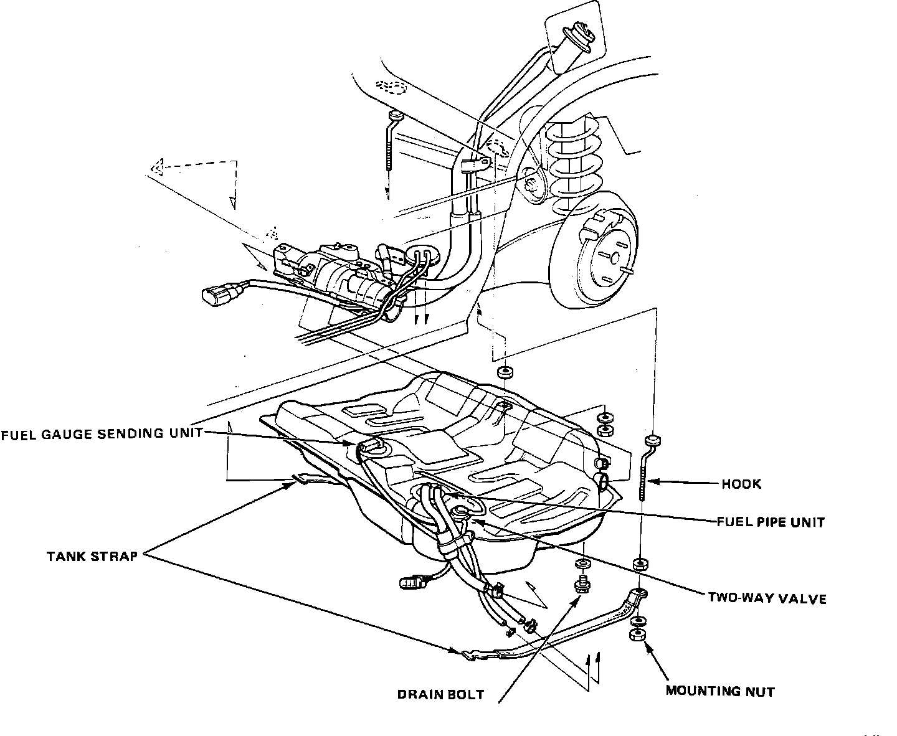

Fuel Tank: Service and Repair
Exploded View:

WARNING: Do not smoke while working on the fuel system. Keep open flame away from work area.
1. Block front wheels. Jack up the rear of the car and support with jackstands.
2. Remove the drain bolt and drain the fuel into an approved container.
3. Remove the fuel pump cover.
4. Disconnect the sending unit connector.
5. Disconnect the hoses.
CAUTION: When disconnecting the hoses, slide back the clamps, then twist hoses as you pull, to avoid damaging them. Clean the flared joint of high pressure hoses thoroughly before reconnecting them.
6. Place a jack or other support, under the tank.
7. Remove the strap nuts and let the straps fall free.
8. Remove the fuel tank.
NOTE: The tank may stick on the undercoating that is applied to it's mount. To remove, carefully pry it off the mount.
9. Install a new washer on the drain bolt, then install parts in the reverse order of removal.